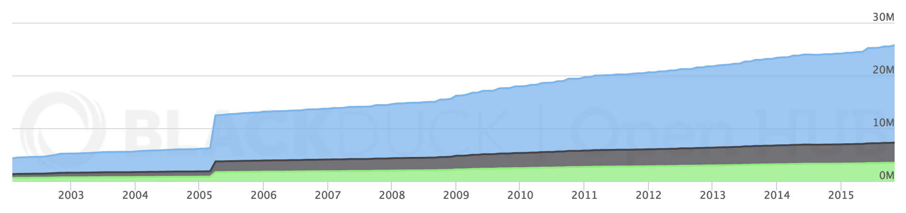
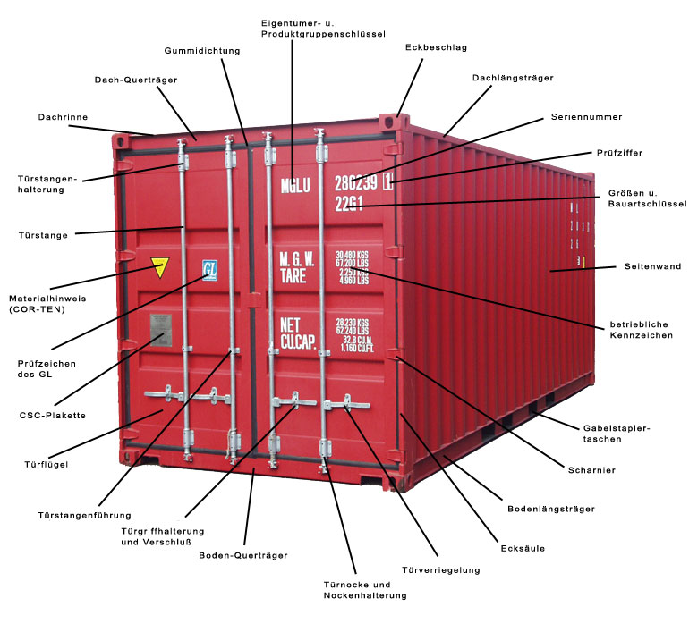

Rust
- zero-cost abstractions
- guaranteed memory safety
- threads without data races
- type inference
- minimal runtime
Justin Cormack
Justin Cormack
London Cambridge based developer
Working at Unikernel Systems
On Twitter @justincormack and Github justincormack
Organized OperatingSystems.io conference last year
I find these assumptions laughable. – Jay Osako
Systems programming has been divided from normal programming
True, linux is monolithic, and I agree that microkernels are nicer... As has been noted (not only by me), the linux kernel is a miniscule part of a complete system: Full sources for linux currently runs to about 200kB compressed. And all of that source is portable, except for this tiny kernel that you can (provably: I did it) re-write totally from scratch in less than a year without having /any/ prior knowledge.– Linus Torvalds, 1992
Currently Linux has over 25 million lines of code...
... and Windows has 50 million.


No one is trying to remake Linux or Windows style monoliths
The model is just enough system software to run your code
Without any external dependencies, you have total control
Everything is open source, with liberal licenses.

A container with everything in it 
Unikernels are at the stage that Linux containers were three years ago before Docker
Clearly this needs to be fixed for widespread use...
"Wouldn't it be cool if we could deploy and manage unikernels with Docker?" Yes, yes it would! #dockercon pic.twitter.com/ZjJWkAuEQm
— Solomon Hykes (@solomonstre) November 17, 2015Pick all three
{kind=link}